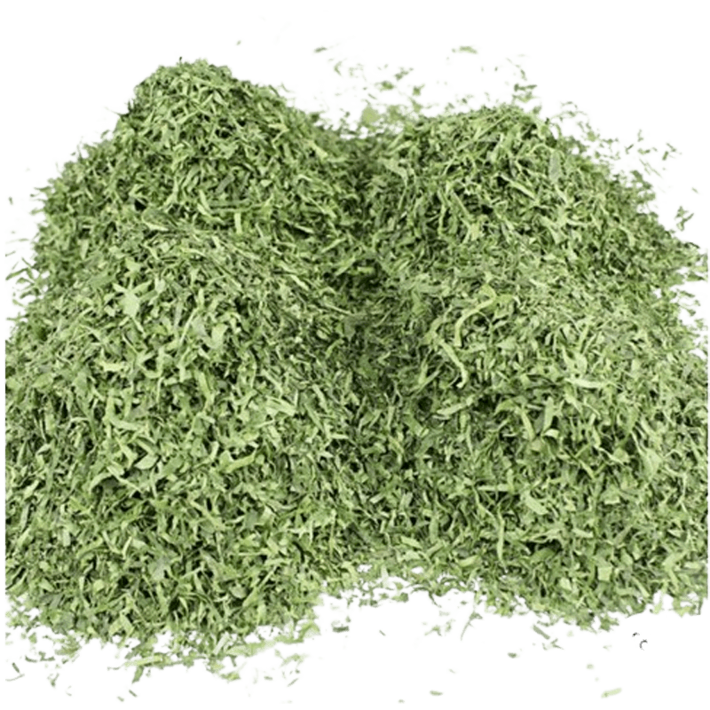
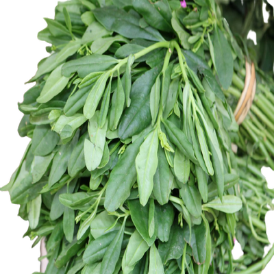
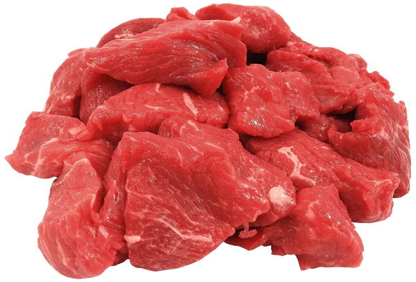
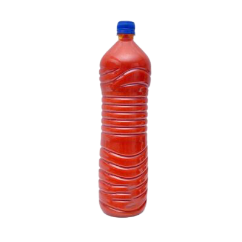
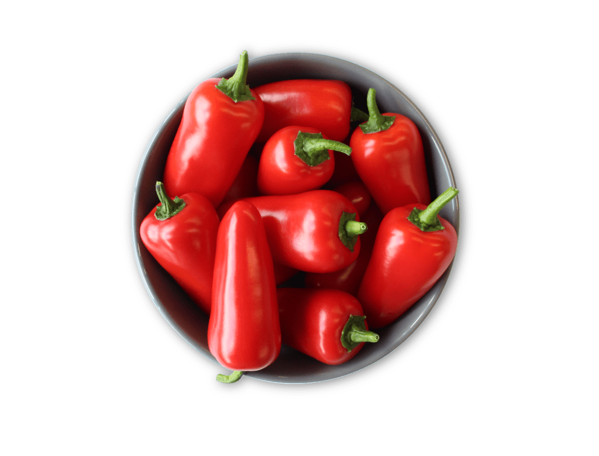
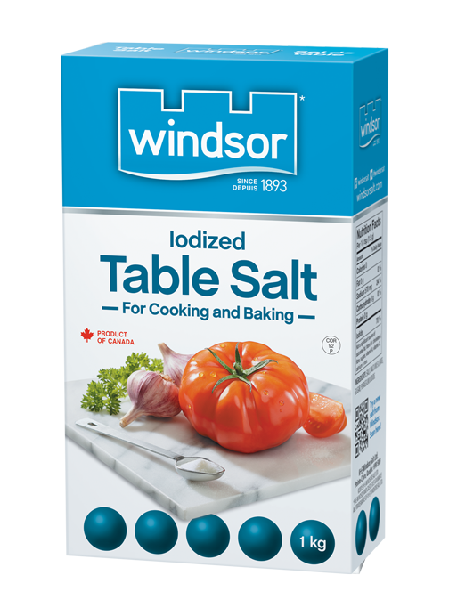
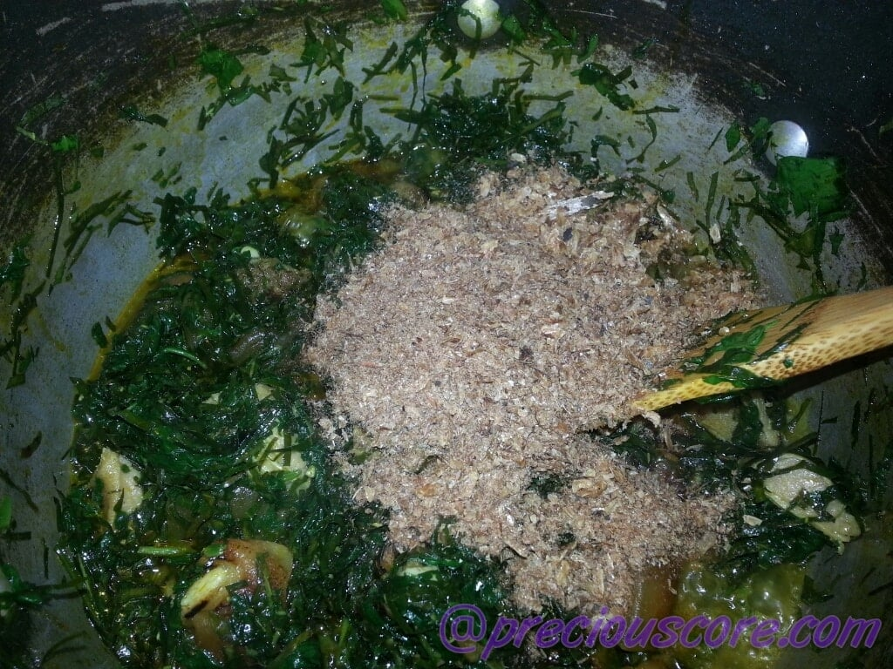
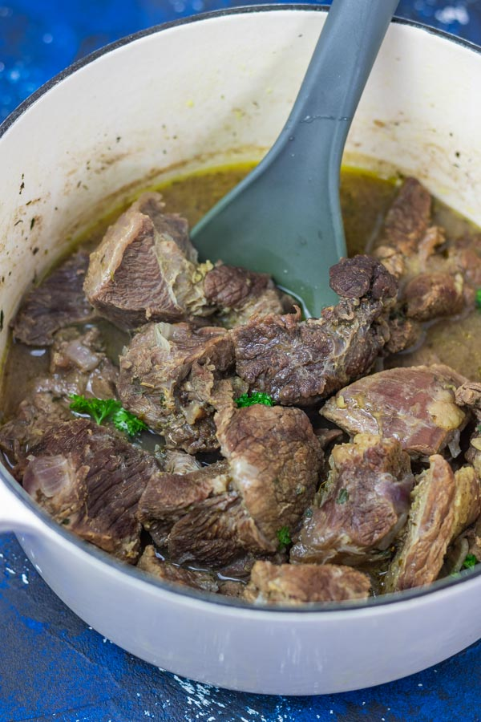
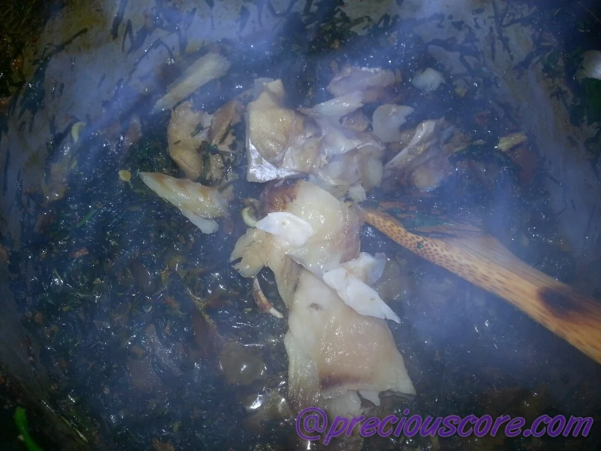
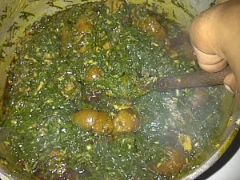

How to Prepare
Fufu and Eru
African most delicious dish
INGREDIENTS
- Eru (also known as okazi) 
- Spinach (waterleaf) 
- Beef, cow skin 
- Palm oil 
- Pepper 
- Maggi
- Salt 
- Salt 
Method Of Preparation
Step 1
if you are using dried Eru, start by soaking
it in water
Step 2
Wash yoyr meat and put in the pot to boil
Step 3
While the meat boils, chop your spinach or waterleaf
and set aside

Step 4
When your meat is half-boiled, season with salt. When
it is cooked, add in the spinach and start stirring.
Step 5
Then you drain Eru and add to the pot. The small
liquid from the spinach will make the Eru soft
Step 6
Add in your fish and mix
Step 7
Then add the oil, seasoning cube and lastly crayfish
Step 8
Stir well and Voila, Eru is ready. Serve with Water Fufu
Nutritional Info
The nutritional information for Eru varies depending on the type of Eru,
such as soup, cheese, or chesse spread